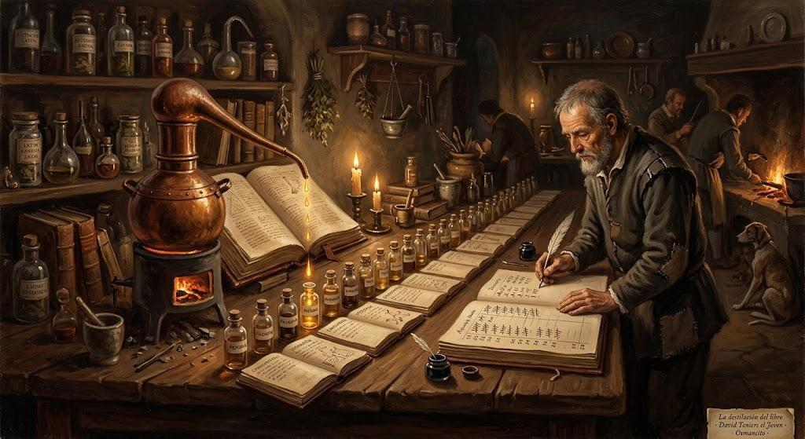

21 de octubre de 2026
Destilando On Writing de King

Este cuaderno lleva el registro de una obra larga: destilar entero On Writing, de Stephen King (en castellano, Mientras escribo), sección por sección. El destilado se publica por unidades en «Mientras escribo», en la Destilería, y este cuaderno anota qué va hecho y qué sigue, hasta que el libro entero esté destilado.
El libro
On Writing es parte memoria y parte manual: King cuenta su vida de escritor y enseña su oficio. En el molde de la bóveda —la segmentación fiel del libro, con cada frase numerada— el cuerpo son 4.194 frases en siete secciones. Las 59 frases que faltan para las 4.253 del libro están en los preliminares, que además de portada, créditos, dos epígrafes y la firma contienen los tres prólogos (44 frases), la nota del autor (1) y los permisos de derechos (14). Los prólogos van primero, como unidad propia; cada sección se destilará a su turno:
| Sección | Frases | Palabras | Estado |
|---|---|---|---|
| Los tres prólogos (BD0023–BD0068) | 44 | 948 | Hecho: «La pregunta de Amy», publicado el 22 de octubre de 2026; su registro va abajo. |
| C.V. (BD0071–BD1536) | 1.466 | 26.017 | En marcha: es la etapa actual; su registro va abajo. |
| What Writing Is (BD1538–BD1610) | 73 | 1.370 | Pendiente. |
| Toolbox (BD1613–BD2053) | 441 | 7.711 | Pendiente. |
| On Writing (BD2055–BD3703) | 1.649 | 34.481 | Pendiente. |
| On Living: A Postscript (BD3710–BD4016) | 307 | 5.388 | Pendiente. |
| And Furthermore, Part I: Door Shut, Door Open (BD4018–BD4167) | 149 | 2.021 | Pendiente. |
| And Furthermore, Part II: A Booklist (BD4169–BD4277) | 109 | 727 | Pendiente. |
Cómo se destila
El procedimiento está fijo y escrito paso a paso en Alambique - Frases Selectas; aquí va solo el resumen de sus reglas para esta obra. Cada frase vale un punto, que se reparte en partes iguales entre sus puestos: el sujeto y el objeto de cada cláusula, principales y subordinadas, y un mismo nodo cobra cada vez que aparece. Los verbos no puntúan. Cada frase pesa lo que suman los pesos de sus nodos, y ganan las más pesadas, alrededor del diez por ciento. Las ganadoras se tejen en el orden del libro con puentes y glosas; la cita va en inglés y debajo su traducción al castellano, verificada palabra por palabra con el libro abierto. Cada unidad lleva su dibujo bajo el título.
Las unidades y las secciones de la entrada se separan con un filete, como manda la decisión 8 del procedimiento: en la página el filete es una línea fina dorada (#a8783a), con 64 píxeles de aire encima y 32 debajo ante cada unidad, y 96 y 40 cuando el título que sigue es de sección; la regla vive en la hoja de estilo común de la casa. Las citas de «Mientras escribo» son la excepción: llevan su filete gris (#9da7b3), propio de esa página. Del C.V. ya están destilados y publicados los tramos 1 a 29, cada uno con su fila en la tabla de abajo; de sus dibujos van repoblados los de las unidades M1 a M23, todas.
Primera etapa: los prólogos
Antes del C.V. el libro trae tres prólogos, cada uno con su título (Primer, Segundo y Tercer Prólogo), que el molde guarda entre los preliminares. Se nos habían quedado fuera: la tabla de arriba solo contaba las siete secciones. Los destilamos como una sola unidad, de 44 frases y 948 palabras, porque suman poco y se leen seguidos; la puntuación va sobre las 44 juntas, con los mismos criterios de abajo. Criterios declarados: cuentan sujetos y objetos de toda cláusula, también las sin verbo conjugado que tienen sujeto propio; el destinatario de un imperativo es su sujeto; «de» cuenta cuando es el contenido («compuesta de escritores», «hecho por Kathi»), no cuando es lugar o comparación; las partes de la persona y sus facultades («mis motivos») se unifican con ella; «este libro», «lo», «un libro corto como este» son el mismo nodo; las referencias vacías, los complementos preposicionales de lugar y tiempo y las comparaciones quedan fuera. Una frase pesa la suma de los pesos de sus nodos distintos. Pesos de los nodos más altos: King 6,0, la banda 4,7, el libro 3,3, Amy Tan 2,2. Ganaron 4 de 44 frases (9,1 %): la 37 (15,4), la 23 (14,8), la 25 (11,6) y la 52 (11,5); siguieron la 60 (11,5) y la 56 (10,9).
El registro de los prólogos
| Unidad | Frases | Palabras | Estado |
|---|---|---|---|
| Los tres prólogos | BD0023–BD0068 | 948 | Hecho: «La pregunta de Amy», publicado el 22 de octubre de 2026. Ganaron la BD0023, la BD0025, la BD0037 y la BD0052, 4 de 44 frases. |
Segunda etapa: el C.V.
El C.V. es la memoria con que empieza el cuerpo del libro, después de los prólogos: King cuenta su vida de escritor en retazos y avisa que esto no es autobiografía, es curriculum vitae. Destilarlo de una vez resultó un bocado demasiado grande; una primera pasada a la sección entera, publicada el 18 de octubre de 2026, se dejó atrás. El propio libro corta la sección con 38 líneas de asteriscos (« *»): son 39 tramos sin título ni número, de 49 a 1.991 palabras. Seguimos esos cortes, sin inventar divisiones. Cada tramo se destila por separado y se publica como una unidad de «Mientras escribo», con su título sacado de la materia del tramo: el primero se llama «El paisaje con niebla».
Criterios declarados de esta etapa, además de los del procedimiento: los infinitivos con «to» no añaden sujeto propio —el sujeto es el de la cláusula madre, que ya cobró—, pero sus objetos sí cobran; los absolutos con «with» («with a nurse hovering nearby») cuentan su sujeto; el destinatario de un imperativo es su sujeto, y si es genérico, como el «you» de «you can’t hear a person die», forma el nodo «uno»; quedan fuera las referencias vacías («there», «this» e «it» que remiten a toda una escena), los predicados después de «ser» («a throat doctor», «fourteen») y los complementos de lugar, tiempo, manera y comparación; las partes del cuerpo y las facultades se unifican con su persona («my jaws», «my heartbeat» son King); «we» es la familia. Una frase sin puestos pesa cero.
El registro del C.V.
| Tramo | Frases | Palabras | Estado |
|---|---|---|---|
| 1 | BD0071–BD0089 | 363 | Hecho: «El paisaje con niebla», publicado el 21 de octubre de 2026. Ganaron la BD0075 y la BD0087, 2 de 19 frases. |
| 2 | BD0090–BD0106 | 280 | Hecho: «El niño forzudo», publicado el 21 de octubre de 2026. Ganaron la BD0103 y la BD0104, 2 de 17 frases. |
| 3 | BD0107–BD0160 | 822 | Hecho: «Siete huevos», publicado el 22 de octubre de 2026. Ganaron la BD0134, la BD0137, la BD0139, la BD0140 y la BD0160, 5 de 54 frases (empate a 30,12 entre la 137, la 139 y la 140). |
| 4 | BD0161–BD0167 | 104 | Hecho: «El tejado», publicado el 22 de octubre de 2026. Ganó la BD0165, 1 de 7 frases. |
| 5 | BD0168–BD0180 | 237 | Hecho: «Ver morir», publicado el 22 de octubre de 2026. Ganó la BD0175, 1 de 13 frases. |
| 6 | BD0181–BD0234 | 900 | Hecho: «No va a doler», publicado el 22 de octubre de 2026. Ganaron la BD0184, la BD0196, la BD0198, la BD0213 y la BD0232, 5 de 54 frases. |
| 7 | BD0235–BD0263 | 408 | Hecho: «Las amígdalas», publicado el 22 de octubre de 2026. Ganaron la BD0249, la BD0251 y la BD0253, 3 de 29 frases (empate a 11,60 entre las tres). |
| 8 | BD0264–BD0282 | 349 | Hecho: «Escribe uno tuyo», publicado el 22 de octubre de 2026. Ganaron la BD0274, la BD0276 y la BD0279, 3 de 19 frases (empate a 10,69 entre la 274 y la 276 en el corte). |
| 9 | BD0283–BD0303 | 360 | Hecho: «A cuarto el cuento», publicado el 22 de octubre de 2026. Ganaron la BD0290 y la BD0296, 2 de 21 frases. |
| 10 | BD0304–BD0341 | 562 | Hecho: «La jungla», publicado el 22 de octubre de 2026. Ganaron la BD0313, la BD0324, la BD0329 y la BD0334, 4 de 38 frases. |
| 11 | BD0342–BD0384 | 811 | Hecho: «El Súper Duper Electromán», publicado el 22 de octubre de 2026. Ganaron la BD0346, la BD0364, la BD0370 y la BD0379, 4 de 43 frases. |
| 12 | BD0385–BD0397 | 270 | Hecho: «Video bullshit», publicado el 22 de octubre de 2026. Ganó la BD0393, 1 de 13 frases. |
| 13 | BD0398–BD0409 | 255 | Hecho: «El Ackermonster», publicado el 22 de octubre de 2026. Ganó la BD0406, 1 de 12 frases. |
| 14 | BD0410–BD0414 | 58 | Hecho: «Yo fui un ladrón de tumbas adolescente», publicado el 22 de octubre de 2026. Ganó la BD0411, 1 de 5 frases. |
| 15 | BD0415–BD0430 | 387 | Hecho: «El Problema de Ruth», publicado el 22 de octubre de 2026. Ganaron la BD0421 y la BD0423, 2 de 16 frases. |
| 16 | BD0431–BD0469 | 754 | Hecho: «Happy Stamps», publicado el 22 de octubre de 2026. Ganaron la BD0443, la BD0448, la BD0455 y la BD0460, 4 de 39 frases. |
| 17 | BD0470–BD0493 | 537 | Hecho: «La noche del tigre», publicado el 22 de octubre de 2026. Ganaron la BD0485 y la BD0491, 2 de 24 frases. |
| 18 | BD0494–BD0525 | 829 | Hecho: «Dave's Rag», publicado el 22 de octubre de 2026. Ganaron la BD0502, la BD0518 y la BD0524, 3 de 32 frases. |
| 19 | BD0526–BD0613 | 1.991 | Hecho: «El pozo y el péndulo», publicado el 22 de octubre de 2026. Ganaron la BD0562, la BD0567, la BD0568, la BD0569, la BD0573, la BD0574, la BD0579, la BD0580 y la BD0591, 9 de 88 frases. |
| 20 | BD0614–BD0680 | 1.384 | Hecho: «The Village Vomit», publicado el 22 de octubre de 2026. Ganaron la BD0657, la BD0658, la BD0665, la BD0670, la BD0672, la BD0673 y la BD0675, 7 de 67 frases. |
| 21 | BD0681–BD0736 | 822 | Hecho: «Con la puerta cerrada», publicado el 22 de octubre de 2026. Ganaron la BD0700, la BD0705, la BD0709, la BD0723, la BD0732 y la BD0736, 6 de 56 frases. |
| 22 | BD0737–BD0772 | 750 | Hecho: «Ratas grandes como perros», publicado el 22 de octubre de 2026. Ganaron la BD0738, la BD0739, la BD0744 y la BD0767, 4 de 36 frases. |
| 23 | BD0773–BD0793 | 350 | Hecho: «La risa sin miedo», publicado el 22 de octubre de 2026. Ganaron la BD0787 y la BD0792, 2 de 21 frases. |
| 24 | BD0794–BD0884 | 1.338 | Hecho: «Me gustan los osos», publicado el 22 de octubre de 2026. Ganaron la BD0801, la BD0802, la BD0803, la BD0804, la BD0824, la BD0861, la BD0870, la BD0880 y la BD0881, 9 de 91 frases (empate a 17,61 entre la 880 y la 881 en el corte). |
| 25 | BD0885–BD0906 | 308 | Hecho: «Su mujer está de parto», publicado el 22 de octubre de 2026. Ganaron la BD0889 y la BD0906, 2 de 22 frases. |
| 26 | BD0907–BD0938 | 652 | Hecho: «Un pato muerto en las fauces», publicado el 22 de octubre de 2026. Ganaron la BD0907, la BD0910 y la BD0915, 3 de 32 frases. |
| 27 | BD0939–BD0976 | 846 | Hecho: «El margen deslizante», publicado el 22 de octubre de 2026. Ganaron la BD0942, la BD0947, la BD0955 y la BD0960, 4 de 38 frases. |
| 28 | BD0977–BD1009 | 651 | Hecho: «Nunca una sola duda», publicado el 22 de octubre de 2026. Ganaron la BD0984, la BD1001 y la BD1002, 3 de 33 frases. |
| 29 | BD1010–BD1070 | 982 | Hecho: «Aquí tienes algo», publicado el 22 de octubre de 2026. Ganaron la BD1012, la BD1016, la BD1018, la BD1062, la BD1064, la BD1066 y la BD1069, 7 de 61 frases (empate a 19,18 entre la 1012 y la 1066 en el corte). |
| 30 | BD1071–BD1157 | 1.669 | Siguiente. |
| 31 | BD1158–BD1205 | 729 | Pendiente. |
| 32 | BD1206–BD1271 | 955 | Pendiente. |
| 33 | BD1272–BD1373 | 1.414 | Pendiente. |
| 34 | BD1374–BD1414 | 666 | Pendiente. |
| 35 | BD1415–BD1417 | 49 | Pendiente. |
| 36 | BD1418–BD1449 | 522 | Pendiente. |
| 37 | BD1450–BD1503 | 1.019 | Pendiente. |
| 38 | BD1504–BD1518 | 251 | Pendiente. |
| 39 | BD1519–BD1536 | 383 | Pendiente. |
© 2026 Osmancito